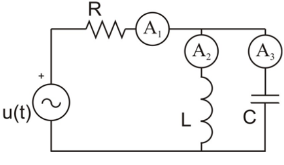
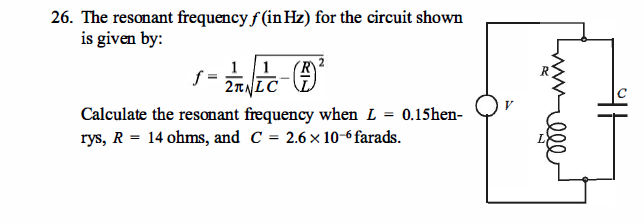
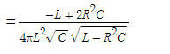
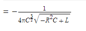
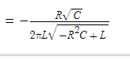

PROPAGACION DE ERROR
LA ECUACION GENERAL ES:
LA ECUACION DERIVADA DE L:
LA ECUACION DERIVADA DE C:
LA ECUACION DERIVADA DE R:
Se denomina frecuencia de resonancia a aquella frecuencia característica de un cuerpo
o un sistema que alcanza el grado máximo de oscilación. Todo cuerpo o sistema tiene una,
o varias, frecuencias características.su vibración es la máxima posible. El aumento de
vibración se produce porque a estas frecuencias el sistema entra en resonancia.
++++++++++++++++++++++++++++++++++++++++++++++++++++++++++++++++++++++++++++++++++++++++++++++++++++++++++++
A continuacion se presentara resultados a partir de operacion que tengan que ver con este tema obviamente.
*Primero al tener conocimiento de los valores de las variables de la ecuacion y sus errores se procede a
encontrar sus derivadas de las varibles,
*Segundo encontramos la propagacion de error
*Tercero el Intervalo en el que se encuentra el valor verdadero
*Cuarto El error porcentual